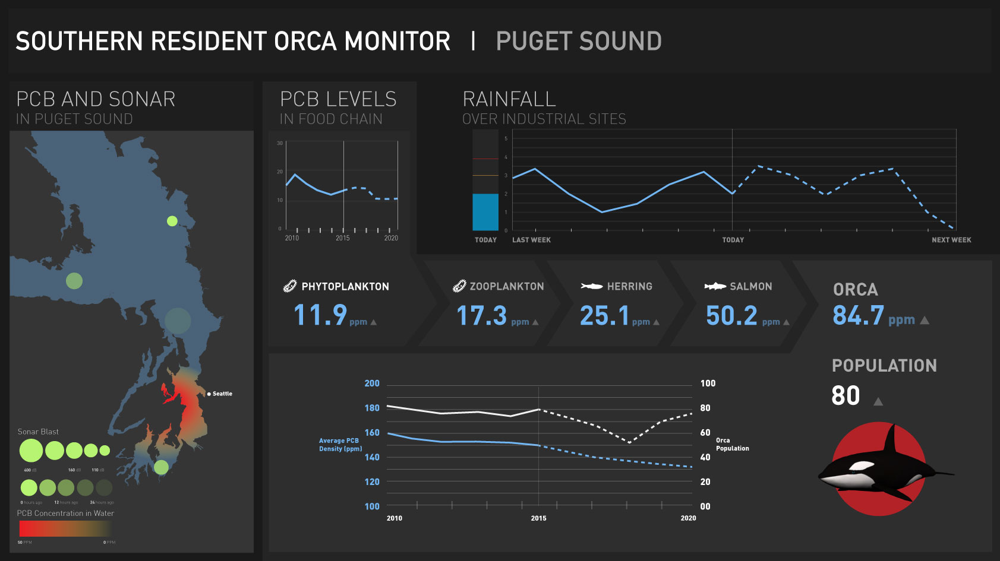
After the PCB is washed into the ocean from industrial sites on land, they are then absorbed by phytoplankton, bioaccumulating through the zooplankton, herring, salmon, and then finally to the orca in a much higher accumulation than in the animals lower in the food chain.

{kind=link}
Project Requirement
In my Interaction Design Studio class, one of my project assignments was to create a layout for an online dashboard that displays climate change and biodiversity for a specific region of the world on an Apple Thunderbolt Display. Our audience are workers at environmental watchdog organizations whose objective is to safeguard public interest by gathering and exposing dangers to the environment. Our requirements includes displaying a critical factor, an impact display, data on a human factor, data on plant life, data on animal life, and data on weather. Our team was assigned the North America Region.Background Research
We started our research by identifying factors that affected biodiversity in the North America region. We identified the Southern Resident Orca in the Puget Sound to be our main area of focus because the PCB Bioaccumulation process in the orcas influences and is influenced by many factors, including human, weather, plant, and animal factors.After the PCB is washed into the ocean from industrial sites on land, they are then absorbed by phytoplankton, bioaccumulating through the zooplankton, herring, salmon, and then finally to the orca in a much higher accumulation than in the animals lower in the food chain.
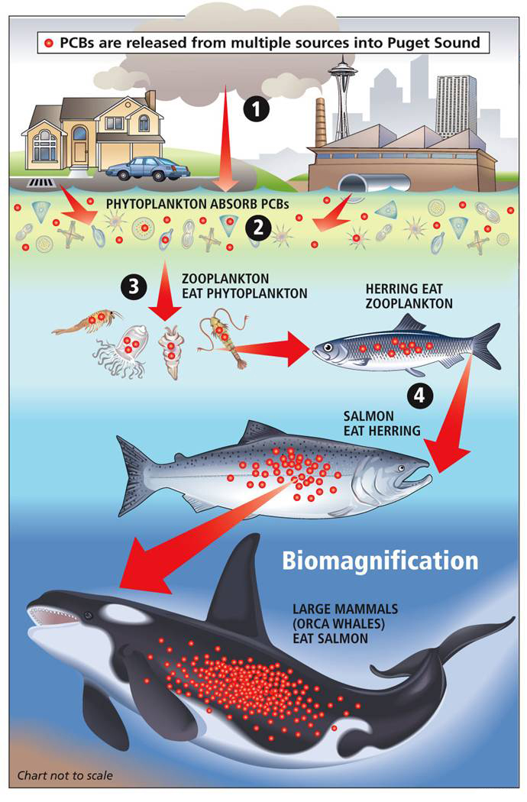
Brainstorm
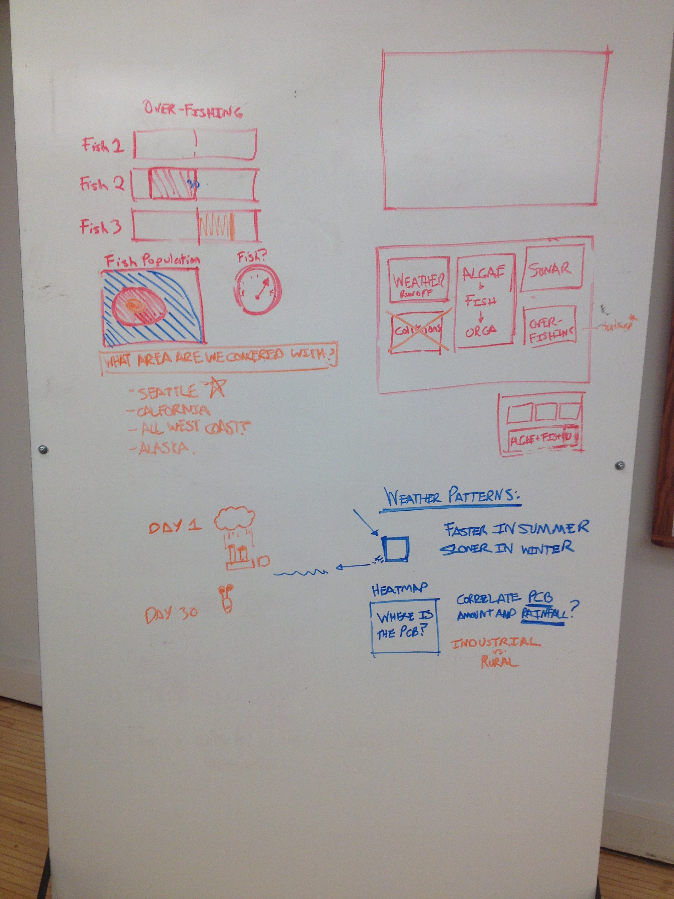
In the first iteration of our design, we decided to include the following factors:
- PCB
- Rainfall
- Food Chain
- Phytoplankton
- Zooplankton
- Herring
- Salmon
- Orca
- Sonar
Initial sketches
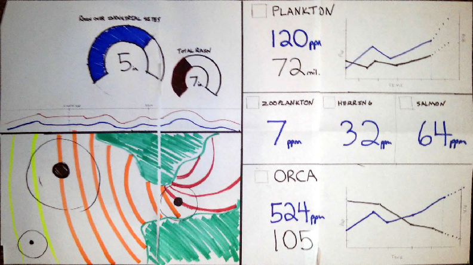
Feedback
A portion of this class also includes critiquing other team’s work and having other teams critique our work. After our initial sketches, we received many useful feedback from critique, but a main confusion was that the relationship between animals in the food chain isn’t very clearly shown. This poses a challenge for us because there was so much data to fit on a relatively small screen so it is hard to be subtle about the relationship of animals in the food chain.
A portion of this class also includes critiquing other team’s work and having other teams critique our work. After our initial sketches, we received many useful feedback from critique, but a main confusion was that the relationship between animals in the food chain isn’t very clearly shown. This poses a challenge for us because there was so much data to fit on a relatively small screen so it is hard to be subtle about the relationship of animals in the food chain.
Design Process
Our team explored several iterations of the design. Our iterations are presented below.
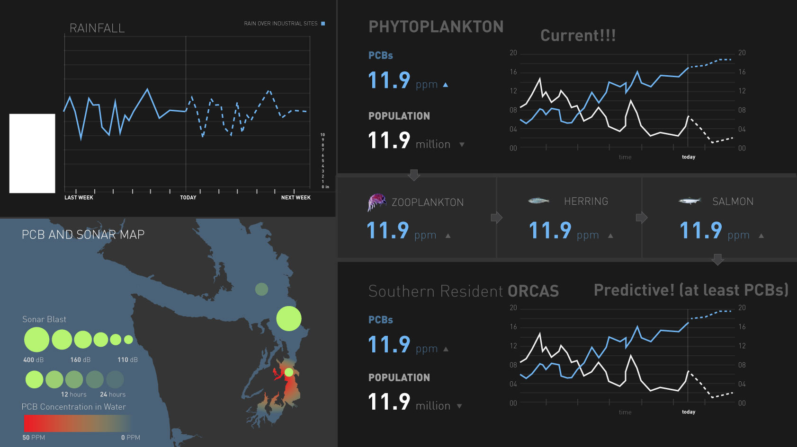
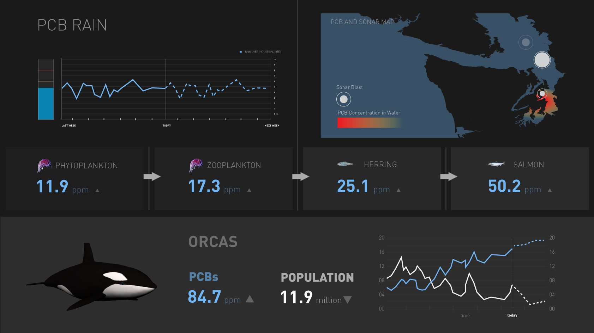
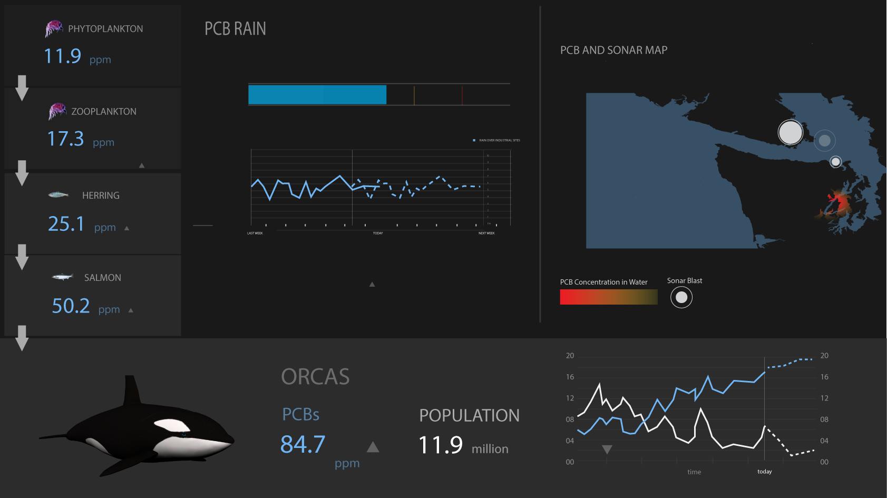
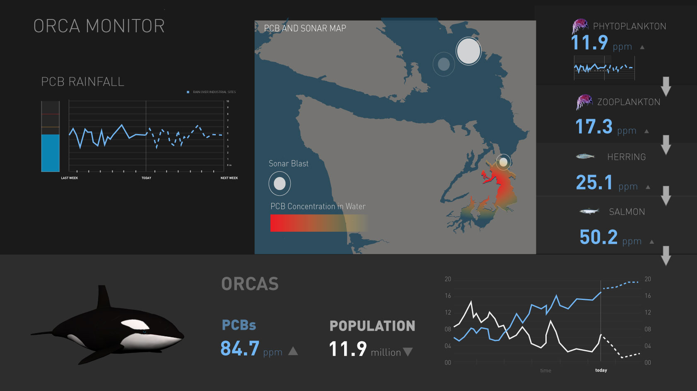
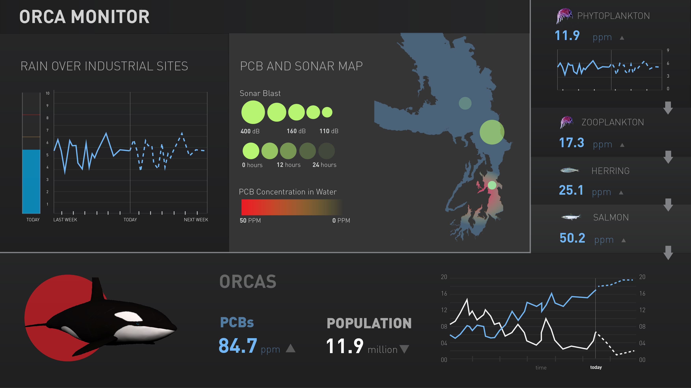
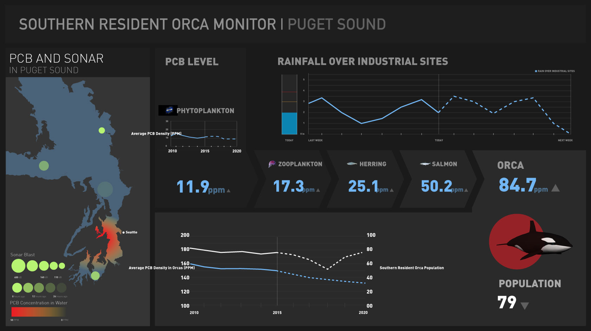
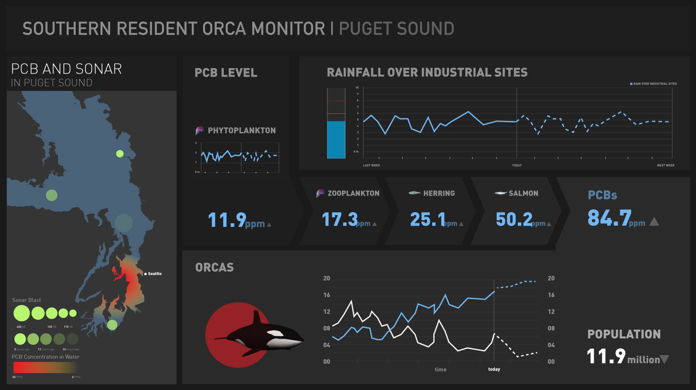
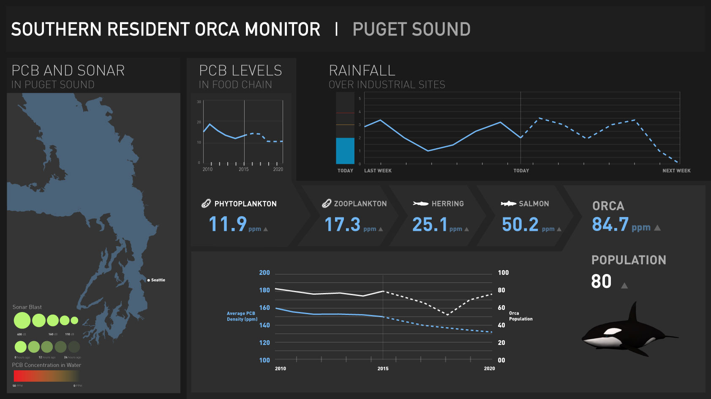
Animation
After finishing our design, we added animation to the dashboard to indicate some urgency and draw attention to the dashboard. Whenever one of the factors that affect orca population drops below the critical level, a red circle will start flashing behind the orca indicating danger, and the respective factor will also flash.Final Design
Below is a state of the final design where the level of rainfall exceeded its threshold
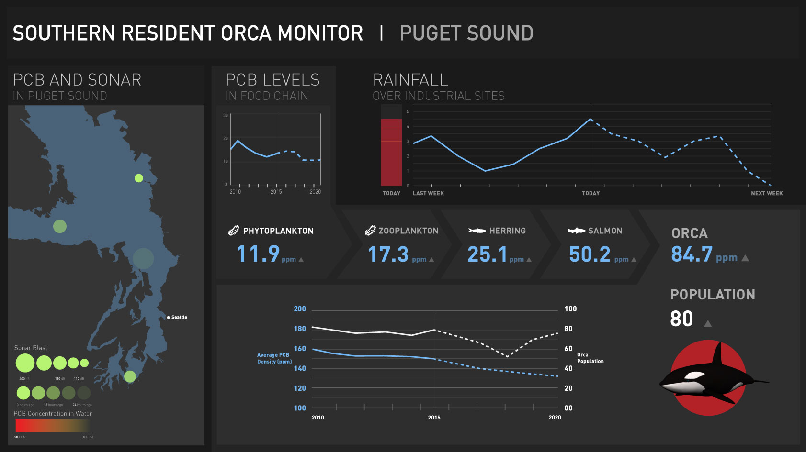
Year
2015Class
Interaction Design StudioTeam Members
- Su Baykal
- Benjamin Boesel
- Luke James
- Lisa Kim
- Omead Kohanteb
- Weikun Liang